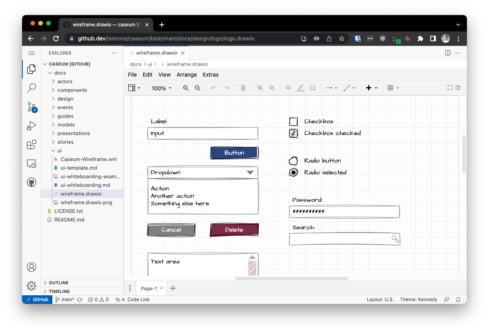

Drawing architecture diagrams with draw.io
draw.io (aka diagrams.net) is a free and open source diagramming tool that can be used to draw architecture diagrams. It is available as a web application and as a desktop application for Windows, macOS and Linux.
While draw.io is not the most powerful diagramming software, is not an architecture-specific tool, and does not support formal modeling, it is good enough. Because it is open source, multi-platform, and has a web-based version, it is accessible. This accessibility is why it is the tool of choice for digital architecture diagrams in Caseum.

Templates
The following Caseum templates are available for draw.io:
| View | Draw.io Library |
|---|---|
| Components | C4 Draw.io Library |
| Actors | use markdown |
| Stories | use markdown |
| Events | ES Draw.io Library |
| UI | Wireframes Draw.io Library |
| Models | TLM Draw.io Library |
Storing draw.io diagrams
Store your diagrams where you store your architecture documentation:
- If you use Confluence, use the draw.io plugin for confluence.
- If you use SharePoint, download the desktop version and save the files in SharePoint.
- If you use GitHub, store the files in your GitHub repository.
VSCode and draw.io
The draw.io integration for VSCode allows you to edit draw.io diagrams in VSCode. It is a great way to keep your diagrams in the same repository as your code, and to keep them in sync with your code.
github.dev and draw.io
The draw.io integration for VSCode also works in github.dev. Replace github.com with github.dev in the URL of any draw.io diagram on GitHub repository to open it in github.dev. For example, you can try editing the Caseum logo.